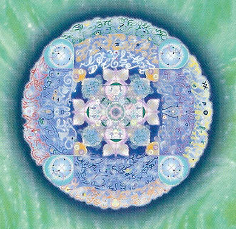
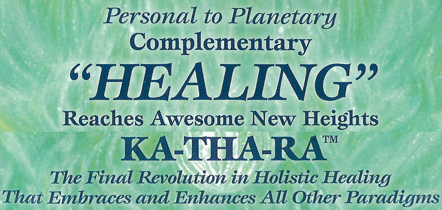
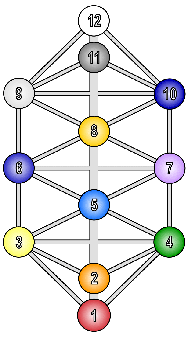
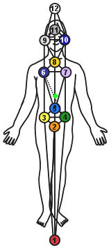
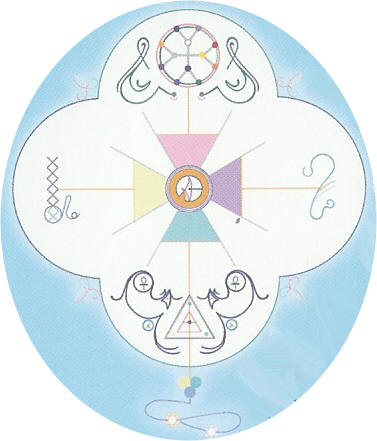
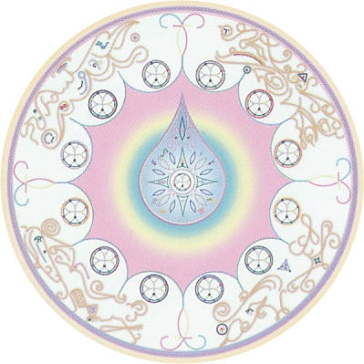
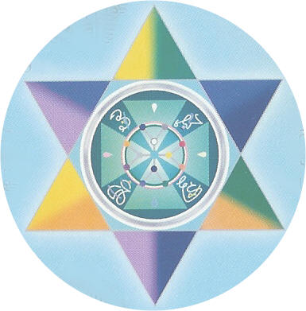
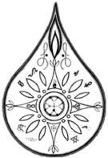

|
  |
|
|
|
Kathara Reveals Hidden Depths... And Choices To Reach Much Higher |
| The Kathara
Bio-Spiritual Healing System is
the keystone teaching at the center of a huge body of
material, all generically known as the "Freedom
Teachings." These are all translated (not channeled)
from Pre-Ancient, Pre-Atlantean, "Law of One" Maharata
Texts, traces of which appear in various forms within
many popular paradigms associated with "Ascension", "Merkaba",
"Healing" and Personal-Spiritual "Empowerment." |
| |
|
The tangible difference
between popular paradigms & Kathara is
the self-evident, and utterly profound, sense of depth,
breadth, and sheer "rightness" that the materials
inherently demonstrate; & to a degree truly beyond
comparison. So much so, that the immense new scope is
now available to develop evermore robust patterns for
dramatic personal healing, growth & consciousness
expansion. |
| |
|
 |
Kathara reveals
the Anatomy of Creation, Core Structure, the blueprints
& interconnectedness of all matter forms reaching far
beyond the framework of all other holistic Healing
Modalities while still embracing them fully.
The Kathara Framework
enables the Core Programming Center of all life & all
life conditions, to be directly accessed, to provide
restoration, revitalization & regeneration of the
natural, Divine, imprint for health.
The word KATHARA (KA-Light, THA-Sound, RA-One)
refers to the Core Structure of Morphogenetic Fields the
Holographic Templates of Sound-Light & Scalar Waves that
serve as the blueprints on which matter manifests. Other
energetic holistic systems utilize various "different"
levels of the morphogenetic field, from the Chakras &
bio-energetic Auric field, to Meridians & Axiom A & B
tonal lines, to facilitate healing limited only to the
level of the blueprints of physical form.
KATHARA is
the ONLY system that transcends the limitations of
existing healing modalities & inherently narrow
understanding of anatomy, by entering the depths of the
Programming Center of Morphogenetic Core - the KATHARA
GRID.
|
 |
| |
|
The KATHARA
GRID is
the CAUSAL
FACTOR beneath
all manifestations of physicality in all Dimensional
expression; thus all forms of consciousness &
consciousness integration-expansion too! |
| |
|
|
|
The KATHARA
GRID is,
therefore, the foundation on which the Axiom Grids,
Merkaba Fields, Auric Field Levels, Subtle Bodies,
Chakras, Meridian Lines, physical matter systems and
Multi-dimensional Levels of Consciousness manifest.
The Kathara
Bio-Spiritual Healing System provides
direct access to the intrinsic, core basis, original
causal condition of dis-ease & its myriad manifest
forms. all original core, conditions are manifest as
electro - tonal -scalar programs of "FIRE LETTERS &
GEOMANTIC CODES" (which function as Scalar Wave Guides).
Fire Letters &
Geomantic Codes direct the formation & operation of the
morpho-genetic fields &, thus every kind of being is
built upon them.
KATHARA MECHANICS (usually
presented in the form of easy-to-use techniques), create
progressive & lasting restoration, revitalization &
regeneration of the natural imprint for health within
the Mind-Body-Spirit System, restoring organic function
within all levels of the subtle energy, physical and
psycho-spiritual systems simultaneously.
|
|
 |
The Kathara
Bio-Spiritual Healing System is
a 12-Level Professional Healing Certificate & Healing
System sponsored by the Institute for Keylontic Science
& the Azurite Press of the Melchizedek Cloister Emerald
Order. Level 1
Kathara was
released to entrain the (re)anchoring of the D-12
(Dimension 12) Maharata-Christos frequencies (template
for the Divine Blueprint); the first time since
210,000BC, on 01-01-2000. Levels 2 $ 3 were presented
first during April 2004, tracking the "Path of Healing
Potentials" into the critical 2012-2017 period.
|
 |
|
|
Kathara Embraces & Amplifies All Other Healing Modalities |
| |
As Kathara healing
works with the core of manifest structure, it is highly
compatible with all other Holistic, Traditional and
Spiritual Healing systems, serving to amplify,
intensify & harmonize the beneficial effects of multiple
healing system combinations.
However, where numbered
dimensional structure is held to be critical to the
modality, some practitioners may suppose, initially,
that compatibility may be more limited than is in fact
the case. Many Energetic Healing Systems that employ the
framework of numbered dimensional structure do not fully
acknowledge the intrinsic morphogenetic structure of the
dimensional framework itself & therefore often confuse
dimensional sub-harmonics and sub-frequency bands as
full dimensional spectra.
Appreciation of Unified
Field Structure & full ordering and relationship of
Dimensions, within the set Universal Dimensional Scale
dispels such confusion, allowing the practitioner a more
accurate & precise system of frequency identification &
application.
For this reason, basic
structural analysis of the Unified Field of
Energy/Consciousness is provided as an introductory
aspect of Kathara.
Modalities using variations of the dimensional spectra
can be translated into the intrinsic Universal
Morphogenetic Dimensional Scale used in Kathara and thus
healing systems based on different numbering systems can
be easily, & beneficially, adapted. |
|
| |
Unique
Features, Unparalleled Opportunities - The Kathara
Bio-Spiritual Healing System |
|
| |
Healing
practitioners generally resonate with the quintessential
principle of Oneness, as a deeply felt matter of
personal choice; intuitively realizing that this
principle correctly represents the most consummate point
of access in all healing processes, but without knowing
exactly why.
Understanding "exactly why"
is the first of many unique points of difference between
Kathara & other modalities; the foundations of the
paradigm that is Kathara unfold from this critical
point. The
Unified Energy Field is the "Theatre of Oneness", the
very framework of all creation; & thus, can be the only
context within which meaningful healing can occur. So
Class begins here, in depth & detail. This central plank
expands to reveal the specific structural relationships
between each aspect of multidimensional human anatomy &
consciousness by exploring, again in depth & detail, the
nature & significance of: the Kathara Grid, Axiom Lines,
Merkaba Fields, Subtle Bodies, Chakras, DNA, Meridians,
Kundalini, levels of consciousness & physical/spiritual
body relationships.
|
|
|
|
 |
As
applied expressions of Oneness are expanded, formerly
secret &, immensely profound aspects of healing inherent
to the personal & planetary bio-energetic fields are
revealed, utilizing Geomancies to
activate the Planetary
Bio-feed Interface System (PBIS), reawakening the Maharic
Shield &
Resetting the Organic
Imprint for Health (held
in the "higher' Planetary Templates).
The flow moves ever
deeper, into the Morphogenetic Re-patterning &
Multi-level Techniques for restructuring damaged areas
of the morphogenetic blueprint, on which the body
systems & embodied consciousness manifests.
Kathara Level-1,
proceeds next to expose the true nature, and mechanical
properties of "Karma" & and it's energetic
Multi-dimensional incarnate characteristics encoded
within the Kathara Grid & Genetic Time Codes of the DNA
Template. |
| |
|
|
| This process of progressive direct
healing, called "Multi-Vector Holographic Recoding" will
reveal the immense significance of activating the 12 Dormant Fire
Codes of the DNA Template, the role of the Maharic Shield & equally
significant, reciprocal release of Star Crystal Seals &
Cranial-Sacral Kundalini Seals, activation of Merkaba Phases, merger
of "Light Bodies" (Hova Bodies) & meaningful embodiment of higher
dimensional, Spiritual aspects, of conscious awareness.
The fully integrated sequence, above,
is called the "Maharic Recording Process" a process of
Whole-Being Healing in the literal context of Oneness, the Divine
Blueprint and natural, organic Christos (re)alignment.
Kathara represents
not only a unique source of awesome data, but also the Gateway to an
unprecedented array of powerful (new) pre-ancient tools. Kathara
Level-1 Techniques
feature the Maharic Seal (see below), & also, discovery of the 4
Primary Triadic Healing Currents which is most profound, since the
Technique reveals the means by which "Light Bodies" (Hova Bodies)
can be utilize to access specific combinations of higher dimensional
frequencies (significantly more so than existing modalities) to
facilitate inter-dimensional skill, and power, in healing, for self
& others, producing Co-generative Healing of the very finest. |
| |
|
|
|
The KATHARA Level-1 Syllabus |
|
Foundations - Core Template Regeneration |
| |
|
Part 1 - Context of Healing-Facilitation |
|
THEORY |
ACTIONS |
|
Unified Field
Structure |
Maharic Shield
Activation
12th
Dimensional Sealing
Clearing &
Energizing Personal Fields
Opening
Healing Channels to Doradic Phase-1 Current
Maharic
Infusion
Maharic
Recording Process
Techniques
1-5
6-Step
Maharic Recording Client Session |
|
Kathara Grid |
|
12 Human
Senses |
|
15-Dimensional
Anatomy |
|
Planetary
Bio-feed Interface System |
|
Multidimensional Identity |
|
Regenerating
the Imprint for Health |
|
Personal Field
Integrity |
|
Healing
Etiquette |
|
Postures of
Love |
|
Morphogenetic
Re-patterning |
|
Multi-vector
Holographic Recording Field Scan |
|
The 4 Primary
Triadic Healing Currents |
|
Kathara
Beginning Studies & Applications |
|
Plus: Phase 1
of the Manifestation-Transduction Sequence |
|
| |
|
|
|
|
Part 2 - Kundalini Awakening Advancement |
|
THEORY |
ACTIONS |
|
Primal
Currents |
Tribal Shield,
Merkaba & Masters Kundalini Activation.
Veca Codes
Induction
Radial Body
Healing
Techniques
6-13 |
|
Kundalini |
|
Merkaba
Fields, Phases & Activation |
|
Radial Body
Anatomy & Healing |
|
DNA Template
Fire Letters |
|
The Tribal
Shield |
|
Veca Code
Shield Activation |
|
Psonn Tones |
|
Healing
through the Manifestation/Transduction
Sequence |
| |
|
| |
|
|
Dis-ease reflects the
inability to understand access & remedy the root
dysfunction in the Manifestation Template of the Body, &
aspects of Multi-dimensional incarnate identity.
Maharic Seal activation
typifies all Bio-Regenesis Techniques associated with
the Freedom Teachings, & offer specific direction of
specific conscious energies to activate dormant parts of
the Manifestation Template.
Bio-Regenesis
techniques simultaneously create subtle, natural
acceleration, within the interwoven system of the DNATemplate, Chakra System, Merkaba Fields,Kundaliny Energies,
Higher Dimensional Consciousness & "Subtle Energy
Body"Anatomy. |
The Maharic
Shield
 |
The Maharic
Shield is
the crucial starting point, because it is through
activation, and reinforcement, of the Maharic Shield
that the Imprint
for Health can
be restored - and - "overwriting" the disharmonic
conditions held within the core, Level
1 Kathara Grid which
would otherwise resurface.
This
potential exists only because theMaharic Shield,
& its corresponding Hove ("Light") Body, are the only
portions of Dimensionalized Density Grid Anatomy that
hold the full 12 Dimensional Frequency Bands, & 144
Sub-harmonics (aka Divine Blueprint); & can thus
restructure the Fire Letters in te Kathara
Grid.
This Key
healing phenomenon, has many additional benefits, too
numerous to include here. |
|
| |
|
The
Source of the Teachings... A PEDIGREE of the Highest Kind. |
| The "Freedom Teachings", of
which the Kathara
Bio-Spiritual Healing System is
an ultimate keystone, represents the authentic voice of the Law of
One; a truth every open-minded person, who has encountered the
range, the depth, and the seamlessness of the "bodies of proof"
offered, would readily, & eagerly, confirm.
The foundations of this material are
vested in solid, advanced spiritual-scientific principles, built
upon multiple dimensional structure, that reach beyond the Quantum,
Unified and String Theories presently entertained by contemporary
science.
And, it is on this unprecedented
level of detailed, & tightly integrated, reasoning that a fully
comprehensive Model of Identity Structure, & spiritual-psychological
function, is presented.
Such a model is unparalleled within
contemporary Psychotherapeutic Sciences and, as a result, has
withstood the scrutiny of a growing number of Medical and
Complimentary Health professionals, along with the evolved
skepticism of "disillusioned seekers", Therapists, Schoolteachers,
"planetary grid workers" & Reiki masters to reference a few.
The perspectives offered here are
truly revolutionary! Material is always presented
in a context which is Expansive, Inclusive (of existing paradigm
identification too), Non-dogmatic, Non-denominational, Egalitarian &
focused on Spiritual Process as an immensely significant Personal
Experiential need, in which individual responsibility & openness to
the significance of informed choice are implicit.
Nothing less that these
perspectives could possibly be consistent, given the all-embracing
influence of the interwoven Root
Awareness of the
ONENESS OF CREATION.
The validation offered within the Freedom
Teachings, "Unified Field of Consciousness-Energy", the
all-inclusive love-based perspectives of spiritual holism intrinsic
to the Kathara paradigm, (which heals the dilemma between scientific
& spiritual dictum), all foster
an expansive framework in which all can freely celebrate, explore, &
evolve the Spirit-Mind-Body experience of Manifest Existence. |
| |
|
The
Vital Element of Holistic Healing - The
"Sacred Sequence" |
| The spiritual reawakening of our
contemporary times is widely held to represent the "Dawning of a New
Age of Enlightenment", the time of a truly immense "Cosmic Shift in
Consciousness" toward "Awakening", "Holistic" & "Natural Healing"
that may affect and "evolutionary leap" for humanity.
The emerging "Cosmic Shift in
Consciousness", & emphasis upon Complimentary Holistic Healing
applications, is a pro-active process, not an act of passivity,
pre-supposing our loving participation as the "Mid-wives" of a new
era of Body-Mind-Spirit Healing and Spiritually Enlightened
Evolution.
Application of Holistic Healing is
an act of Spiritual Midwifery; Rebirth of an Enlightened
Consciousness & healed Body-Mind-Spirit system. It is an Art Form
that requires love, wisdom & demonstrative ability in blending the
forces of intuition & unconditional love with practical skills honed
by intelligent application of genuine, practical knowledge.
Unlike many popular paradigms of
Holistic Healing, which frequently endorse personal power
displacement & offer limited focus upon singular remedial
applications, the Kathara
Bio-Spiritual Healing System is
based upon comprehensive ancient wisdom - empowering "Law of One"
Spirituality - revealing detailed dynamics of the hidden Vital
Elements of Holistic Healing, the Sacred "Manifestation-Transduction
Sequence".
This encompasses the very specific
structures of multidimensional anatomy, mechanics of
inter-dimensional physics & related functions of energy,
consciousness & spirit by which manifestation occurs.
Knowledge of the Manifestation-Transduction
Sequence within
Healing practice clarifies the true unified context in which
singular aspects of the Body-Mind-Spirit system naturally reside,
offering vital multi-level healing applications, while giving rare
insights into the intimate connections between "Spiritual Anatomy",
"Physical Anatomy", healing and the role of DNA.
The Kathara
Bio-Spiritual Healing System presents
a revelatory body of genuine Pre-ancient Spiritual Science knowledge
unprecedented in range, content, depth, and accessibility, by which
the Art of Holistic Healing can be progressively explored, developed
& expanded through enlightening perspectives, rare technical
knowledge & powerful Complementary Healing tools dedicated to
cultivating an aware & empowered relationship to the emerging
"Cosmic Shift of Consciousness" to "Whole-being Healing" &
enlightened "Conscious Evolution". |
| |
| |